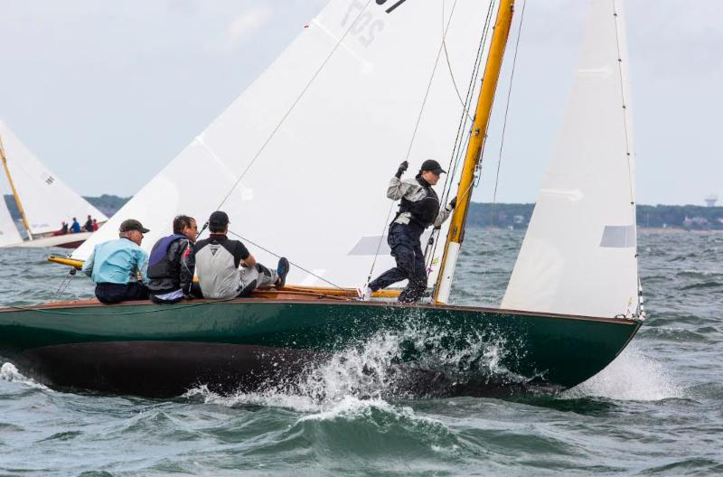
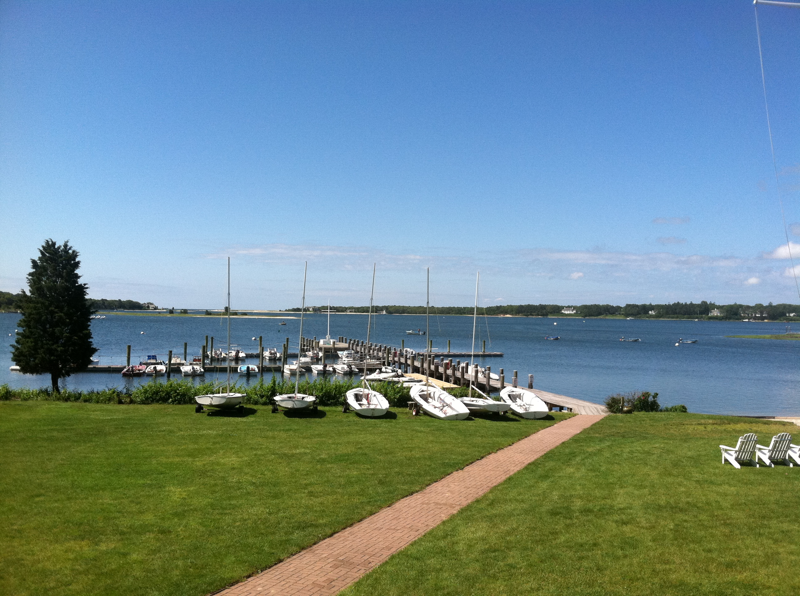

The Wianno Yacht Club is located in Osterville, Massachusetts. Our members sail and fleet race Wianno Seniors, Vanguard V-15s, Doughdishes/Haven 12.5's, Crosby Fast Cats, 420s, and Optimists. The Club offers Sailing Programs for Juniors and Adults to members and non-members. The Junior Sailing Program is dedicated to teaching kids seamanship and how to sail in a fun and encouraging environment. Club-owned boats include Optimists, 420s, Vanguard V-15s and Crosby Fast Cats which are used in our sailing programs.
Our Yacht Club building (1930) being prepared to move to its present site
The small building at the left is our yacht club when it belonged to the Osterville Yacht Club. As you can see from the picture, it was located next to Crosby's large storage shed (that burned in 2003). In 1931, we purchased the building, moved it to the present location and dedicated it on July 4th, 1931. Members of the Osterville Yacht Club became members of the Wianno Yacht Club at that time.

Welcome to the Wianno Yacht Club home page. The Wianno Yacht Club is located in Osterville, Massachusetts. The Junior Sailing Program, which is open to non-members, is dedicated to teaching kids how to sail in a fun and encouraging environment.
View more
Join the Sailors of the Wianno Yacht Club on West Bay each Saturday morning from June 26th through September 4th. Sailors young and old of all abilities are always welcome to bring any type of boat on hand.
View more
Registration opened May 16 for members and May 23 for non-members. If you are interested, please print a registration form and mail it to the address indicated on the form. The programs are limited in size.
View more